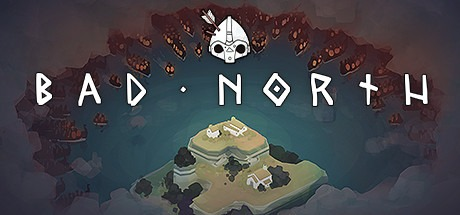
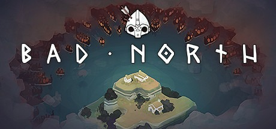
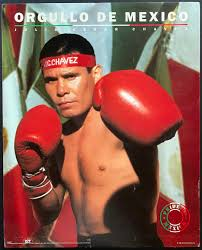
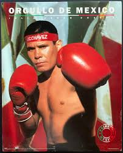

Video Games
I love playing video games because whenever I'm down I can just play until my hearts content. I love playing them also because I am extremly competitive and love the team element of any sort of a game whether it be video or not. Normally when I am playing it's with randoms but I still talk to them all the same and for good reason because I like to play the support role often. On occasion I play something single player or something that has a dueling mechanic.
Some game titles I play
.jpg)
.jpg)
.jpg)
.jpg) 

Boxing
I have only started to try and box recently and right now I can tell you I'm not very good however whether or not I do continue to box boxing will always be with me. I mean that in the sense of watching fights it's one of the few things me and my dad really can bond over. It is also something very inwined with my family and I mean that more in the family part and less in the fighting. when a fight comes around we're always at someones house like my cousins or uncles it very much becomes an event and everyone is talking about technics and making fun of who they walk out with all and all its a good time.
List of some of my favorite boxers
- Sonny Liston
- Julio Cesar Chavez
- Thomas Hearns
- Oscar De la Hoya
- Micky Ward
- Ken Norton
.jpg) Sonny Liston 50-4-0
 Julio Cesar Chavez 107-6-2
Sonny Liston 50-4-0
 Julio Cesar Chavez 107-6-2
.jpg) Thomas Hearns 61-5-1
Thomas Hearns 61-5-1
.jpg) Oscar De la Hoya 39-6-0
Oscar De la Hoya 39-6-0
.jpg) Micky Ward 38-13-0
Micky Ward 38-13-0
.jpg) Ken Nortan 42-7-1
Ken Nortan 42-7-1